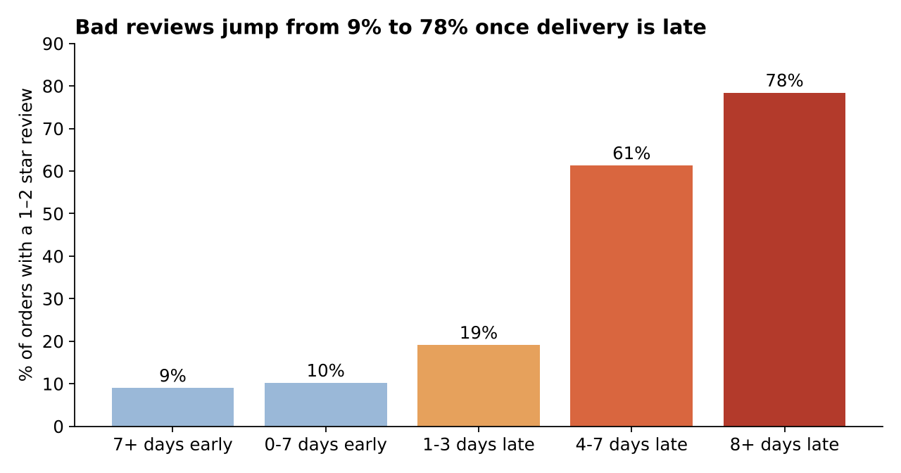

YashikaBhatia
I find where a product is leaking revenue, work out why, and turn it into a change the team can test. Currently a Product / Data Analyst at Times Internet (The Economic Times).
About
I'm a product analyst who works close to revenue. My job is to spot the business problem, find the friction in the funnel, and suggest what to change, then prove it with an A/B test.
At Times Internet I own analytics for a health & wellness platform: city running events, online yoga subscriptions and dietitian-led diet plans. That covers website and funnel improvements, product and pricing strategy, marketing-funnel efficiency on Meta and Google, payment-gateway issues and daily business dashboards.
Before that, at Convertcart, I ran conversion-optimisation programmes for 60+ global e-commerce brands.
- Role
- Product / Data Analyst
- Currently
- Times Internet (The Economic Times)
- Focus
- Funnels, growth, experimentation, pricing
- Core stack
- SQL · BigQuery · GA4 · Power BI / Looker
- Experience
- 2.5+ years
- Education
- BSc Physical Science, Gargi College (DU) · 9.13/10
- Based in
- Delhi NCR · immediate joiner
Work case studies
Real problems from my current role. The product is anonymised and internal numbers are rounded; the approach and outcomes are mine.
C/01Selling more tickets for city running events
+10%landing → registration+
Selling more tickets for city running events
Problem
- Ticket sales for running events in 4 metro cities needed to grow, and conversion from landing to registration was low.
- Paid ads were spending heavily without a clear view of which were working.
What I did
- Mapped the full funnel and found the friction: a long registration form, extra details asked too early and a clunky UI flow.
- Proposed a shorter, simpler flow and ran it as an A/B test.
- Noticed most runners sign up in groups, so I designed a referral plan with a ticket-upgrade reward.
- Analysed Meta and Google ads: paused high-spend, low-return ads and turned patterns from the winners into creative changes.
- Investigated payment-gateway failures in the checkout funnel.
- Built a business dashboard with daily updates and city-specific strategies and tests.
Impact
- +10% landing-to-registration conversion from the simplified flow, lifting total revenue.
- The referral plan drove more group registrations and revenue.
- Opened new revenue streams beyond tickets: stalls, corporate tickets and sponsorships.
- Less ad spend wasted on poor performers.
C/02Growing online yoga subscriptions
+5%funnel conversion+
Growing online yoga subscriptions
Problem
- Online yoga classes sold as 1-month, 3-month and 1-year plans. The goal was more subscriptions and more revenue.
- Users only saw plans and prices after submitting a lead form, so many dropped off before seeing the value.
What I did
- Analysed the funnel step by step and proposed showing plans directly on the page, before the lead form.
- Proposed selling yoga plans to an international audience at a higher price point.
Impact
- +5% conversion after moving plans ahead of the lead form.
- International pricing added a higher-AOV revenue stream.
C/03Building trust and new markets for diet plans
50%+net GTV growth+
Building trust and new markets for diet plans
Problem
- Dietitian-led diet plans (consultation call plus 1/3/6/12-month plans). The brand was new and unknown, so trust and leads were the bottleneck.
What I did
- Proposed free webinars to generate leads, build trust and then sell plans.
- Proposed launching online diet plans in international markets such as the UAE and Singapore at higher rates.
Impact
- Webinars generated ₹5 lakh in revenue.
- International plans grew the business by more than 50% in net GTV.
C/04Targeting the right users with a propensity model
₹40L+revenue impact (all RCAs)+
Targeting the right users with a propensity model
Problem
- Marketing and CRM effort was spread evenly across users, and revenue was leaking at payment.
What I did
- Built a propensity model to score users on how likely they were to buy, so campaigns could focus on the highest-intent users.
- Ran root-cause analyses on payment failures and funnel drop-offs across products, channels and segments.
Impact
- Root-cause fixes across the funnel and payments delivered ₹40L+ revenue impact.
Selected projects
Self-initiated analyses on public or clearly labelled simulated data. Every query and output is on GitHub.

What wins on Indian business-news YouTube? ET vs 5 peers
1,860 videos I collected across six channels. Channel-normalised performance index, topic supply vs demand, title and format analysis.

A/B test design & readout, with a ship / no-ship call
Sample size, z-test, confidence intervals, SRM check, guardrails, Bonferroni-corrected segments. 289 live formulas. Simulated data

Late deliveries & bad reviews: an e-commerce RCA
96K orders. Lifecycle breakdown, seller SLA scorecard and impact sizing in orders, reviews and GMV.

Cohorts, RFM segments & a sized win-back plan
93K customers. Cohort retention matrix, NTILE-based RFM scoring and CRM targeting.
Also on GitHub: Revenue, category & payment deep-dive (MoM/YoY, Pareto, instalments vs AOV).
Experience
Product / Data Analyst
- Own funnel, growth and product analytics for a health & wellness platform (events, yoga, diet).
- Root-cause analyses on payment failures and drop-offs drove ₹40L+ revenue impact.
- Designed A/B tests on UX, conversion blockers and plan presentation; built a propensity model for targeting.
- Automated recurring reporting with SQL, BigQuery and Apps Script; built an LLM-powered workflow for exploring transaction data.
Associate Team Lead, CRO
- Ran conversion optimisation for 60+ global e-commerce brands (Shopify, Magento, BigCommerce).
- 4–6 A/B and multivariate tests a month for 10%+ conversion growth.
- Built 20+ Looker Studio and Power BI dashboards; managed $5K–15K MRR accounts with 96% client retention; led a team of 2.
Toolkit
Data & querying
SQL · BigQuery · GCP · DBT · Google Sheets · Advanced Excel · Apps Script
Product analytics
GA4 · Mixpanel · Microsoft Clarity · VWO · Heatmaps & session recordings
BI & reporting
Power BI · Looker Studio · automated dashboards & MIS
Methods
Funnel & RCA · A/B testing · cohorts & RFM · propensity scoring · pricing & GTM · Meta / Google Ads analysis
Recognition
Let's fix a
funnel.
Open to product, data, business and decision analyst roles in Delhi NCR or remote. Email is the fastest way to reach me.